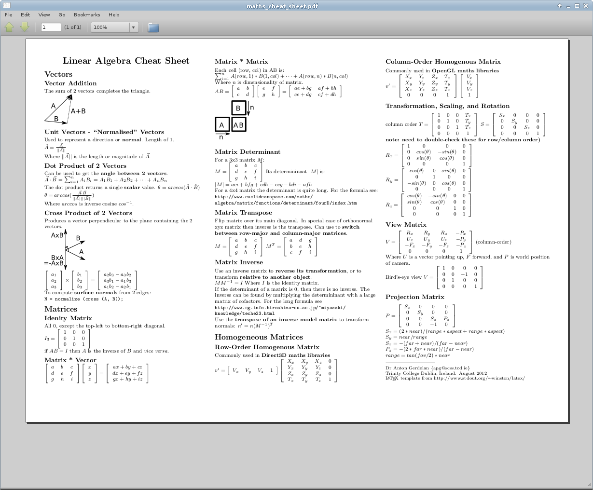

[index]
Anton's Research Ramblings
3 September 2012.
3d Maths Cheat Sheet
After failing to correctly remember some vector/angle conversion formula and going back to re-read my own lecture
slides (this happens all the time...) I decided that it was time to write a look-up cheat sheet for these things;

A set of commonly used 3d maths and linear algebra formulae for those like me - with a brain that tends to
delete this stuff from memory immediately. Click image for .pdf.
3d camera vis
I have to switch back to working on buildings again soon, so my tie-it-up plan for the 3d camera visualisation is:
-
switch from 2d particles to 3d meshes (or maybe resize the particles with z) for the faces so that you can see the
depth
-
detect nods (y) and shakes (x) of heads and derive the frequency and amplitude. then I can say "if f > some
threshold then head is nodding 'Yes'".
-
print out these tracking stats either in text or with some sort of real-time graph
-
clean up the camera feed and track the face positions so that the characters are never mixed up
-
write up a technical report as a workshop style "this is how you visualise 3d data with webgl, and this is how
hard it is to do" sort of thing.